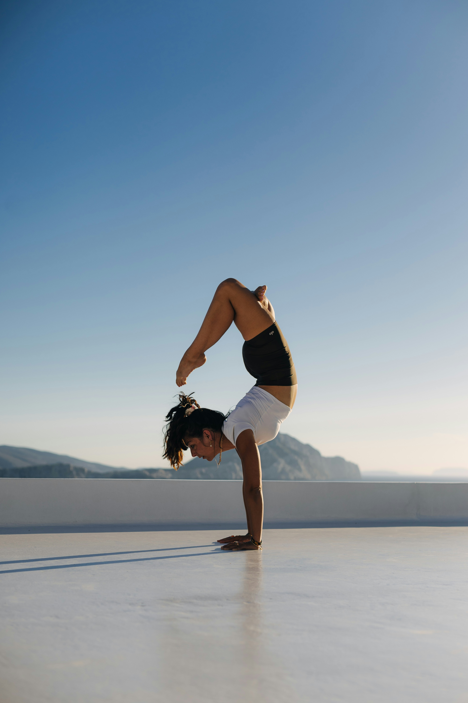

The Power of Balance
October 7, 2026 by Melissa Williams

Balance is an important skill that requires strength, focus and determination. Activities such as gymnastics and handstands can challenge a person to control their body while maintaining their concentration.
Learning something new often takes patience and practice.A handstand may look simple, but it requires coordination and confidence. With consistent practice and a positive mindset , people can improve their skills and become more comfortable trying new things.